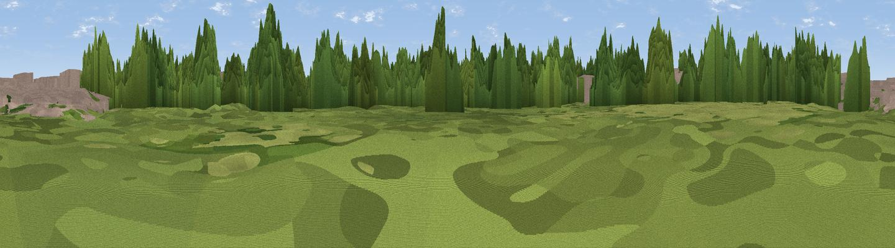

Viewpoint near Wimbledon
#45997 in England · top 91% of its area beats it · near WimbledonWhere it is
The exact computed spot (TQ 26065 68976). Click the marker for map links.
The view, rendered

A 360° render of this exact spot computed from the terrain model, tree cover and land cover — summer colours, afternoon light, calibrated against photographs of famous viewpoints. Real trees, hedges and buildings will differ in detail.
The panorama
Grey silhouette: terrain skyline in each direction (720 bearings, Earth curvature and refraction included). Dashed green: skyline with trees (+15 m) and buildings (+8 m) as obstacles. Blue strip: how far the ground is visible on each bearing.
Where the view opens
Wedge length = distance to the farthest visible ground on that bearing (vegetation-aware). Rings at 10, 25 and 50 km.
What fills the view
55% woodland · 35% built-up · 11% grassland
Angular shares of the visible panorama (visual magnitude), not map area. Landscape diversity 0.41 (0–1 Shannon).
Key numbers
More beautiful places nearby
The staircase of upgrades: each row has a higher view potential than everything closer. Driving times are estimates from straight-line distance, calibrated against real road routing — check an actual route before setting out.
| Place | Direction | Drive | Score |
|---|---|---|---|
| Viewing platform | N · 2 km | ~6 min | 12.5 |
| Mill Hill | ESE · 3 km | ~7 min | 16.0 |
| Viewpoint near Beddington Corner | E · 4 km | ~10 min | 20.5 |
| Viewpoint near Sydenham | E · 7 km | ~15 min | 23.8 |
| Viewpoint near Sydenham | E · 7 km | ~15 min | 24.3 |
| Viewpoint near Richmond | WNW · 8 km | ~17 min | 24.9 |
| Viewpoint near Richmond | WNW · 9 km | ~17 min | 28.4 |
| Viewpoint near Croydon | ESE · 10 km | ~19 min | 34.6 |
51.40581, -0.18894 · source: osm viewpoint · position refined by local search. Computed location — check access rights before visiting.